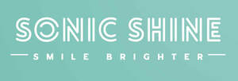

Trade Mark Journal No.2025/028 11 July 2025
UK00004191990 21 April 2025 (8,11,21)
Mark 1
Mark 2

- Class 8
- Hair straightening irons; Electric hair straightening irons; Electric hair straighteners; Hair clippers; Electric irons for styling hair; Electric hair curling irons; Hair styling appliances; Hair cutting scissors; Electric crimping irons for the hair; Hand implements for hair curling; Hair curling (Hand implements for -); Curling tongs; Electric curling tongs; Electric eyelash curlers; Electric hair crimper; Electric hair crimpers; Hair braiders, electric; Electric hair braiders; Electric hair clippers; Non-electric hair clippers; Electric hair trimmers; Electric hand-held hair styling irons; Hair clippers for babies; Non-electric curling irons; Hand-operated hair clippers; Electric hair cutters; Nasal hair trimmers; Beard trimmers; Electric ear hair trimmers; Electric nasal hair trimmers; Electric beard trimmers; Non-electric beard trimmers; Mustache and beard trimmers; Beard clippers; Electric and battery-powered hair clippers; Non-electric eyebrow trimmers; Wick trimmers [scissors]; Wick trimmers being scissors; Nail skin treatment trimmers; Hair clippers for personal use; Hair clippers for personal use, electric and non-electric; Electric hair clippers for personal use [hand instruments].
- Class 11
- Dryers (Hair -); Hair dryers; Driers (Hair -); Hair driers; Hair drying appliances; Appliances for drying hair; Apparatus for drying the hair; Hair drying apparatus; Apparatus for drying hair; Hair driers [dryers]; Electric hair dryers; Travel hair dryers; Stationary hair dryers; Electrical hair driers; Warm air dryers for use in drying hair; Hair driers for use in beauty salons; Hand-held electric hair dryers; Fans for hair drying; Hair dryers [for household purposes]; Towel steamers for hair salons; Clothes dryers; Hand held hair dryers; Hair drying machines for beauty salon use; Holders adapted for hair dryers; Infrared lamps for drying the hair.
- Class 21
- Toothbrushes, electric; Electric toothbrushes; Electrical toothbrushes; Toothbrushes; Electric and non-electric toothbrushes; Toothbrushes [non-electric]; Non-electric toothbrushes; Manual toothbrushes; Toothbrush bristles; Battery-powered dental flossers; Heads for electric toothbrushes; Toothbrush holders.
Haseeb Ali